Katherine Does Art Sometimes


Waking2017
Not really glitch art, but an ongoing series involving fractal curves and nature photography.
One of my favorite fractal curves is the Hilbert curve, which is an iteratively drawn space filling curve and an excellent doodle game. When overlaid on a grid, the curve passes through each square exactly once. The Moore curve is a variation on this curve, obtained by placing four copies of an iteration of the Hilbert curve so that their endpoints coincide. When making pieces in this series, I take a photograph, mask it with a Moore curve, and overlay it on a flipped copy of itself.
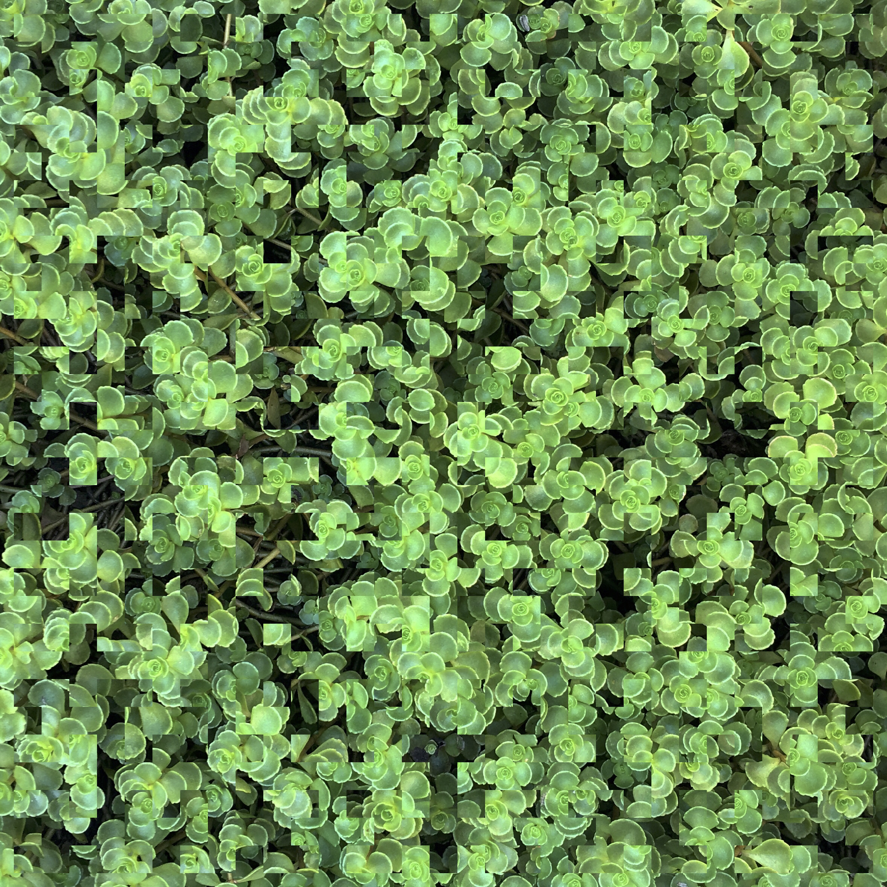
Breathing 2017
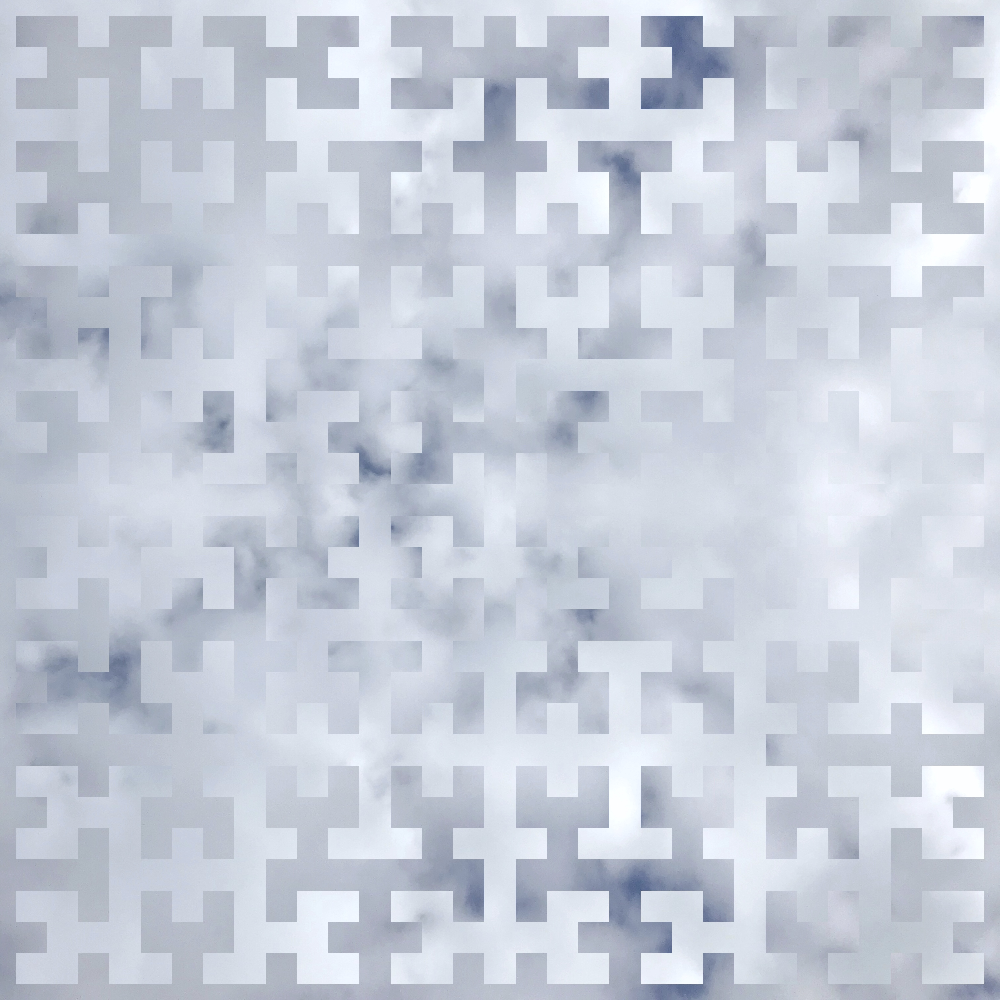
Seeking 2018

Forgetting 2018
Diana 2019
Oil on canvas. Inspired by Anna Hyatt Huntington's 1922 scupture "Diana of the Chase," Giorgio de Chirico's 1927 "The Eventuality of Destiny," and René Magritte's 1958 "The Banquet."
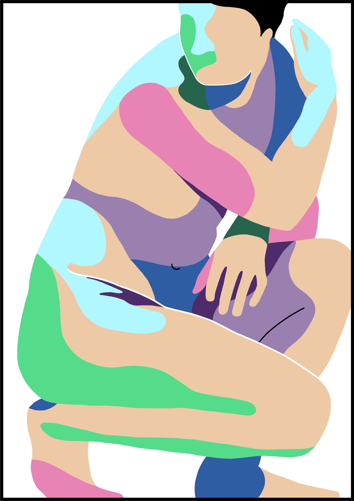
Aphrodite 2020
Digital painting. Inspired by the Lely Venus.
Untitled block print (self portrait in blue) 2020
My first try at block printing! Edition of five.
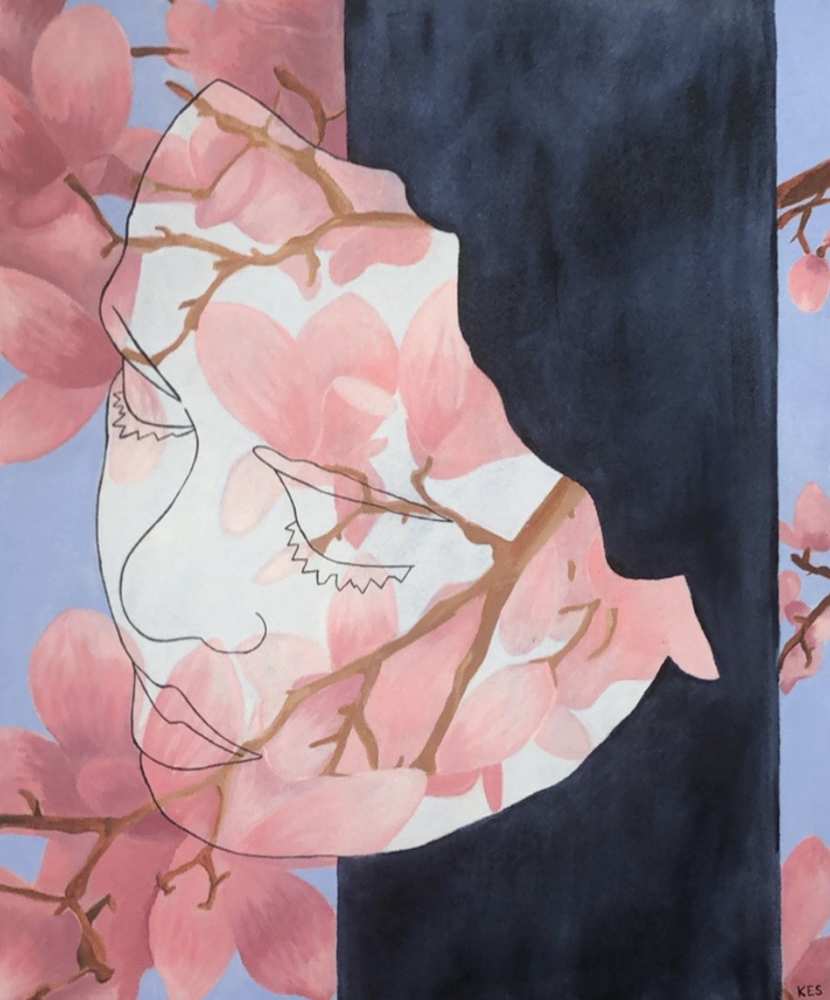
Self Portrait 2019
Oil on canvas.
Look Closer 2019
A five part photo series involving 10 negatives, a 1970s Olympus OM-1, several pieces of cardboard, one zacto knife, and many hours spent stenciling and selectively exposing parts of photosensitive paper in a darkroom to collage two images onto a single sheet. 7" x 7" each, mounted on board.
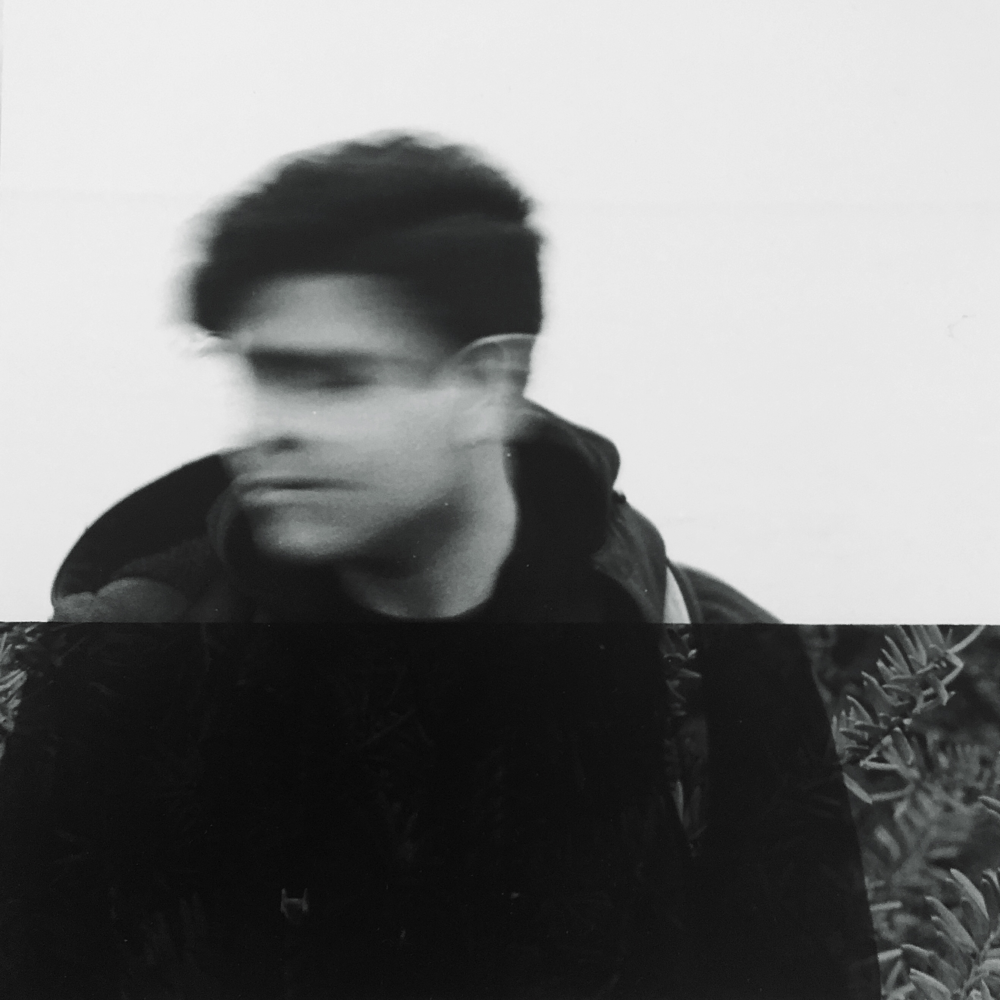
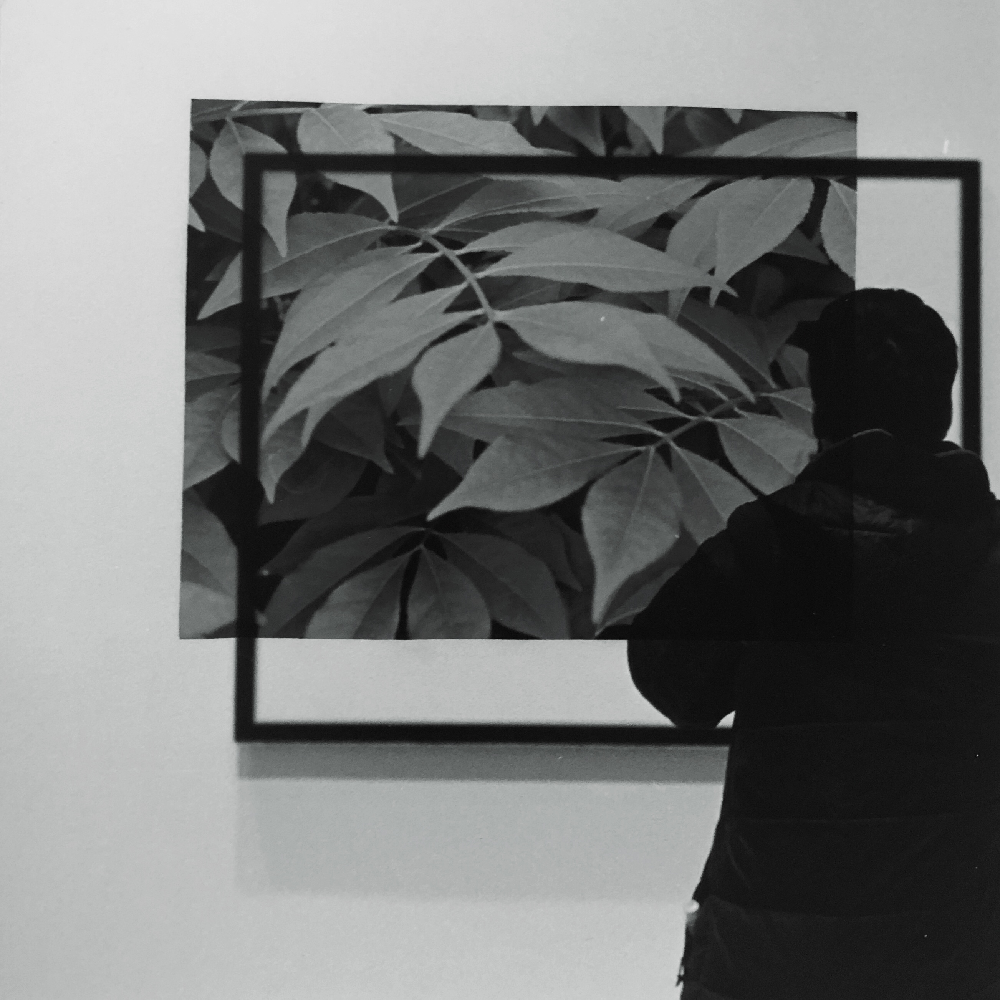
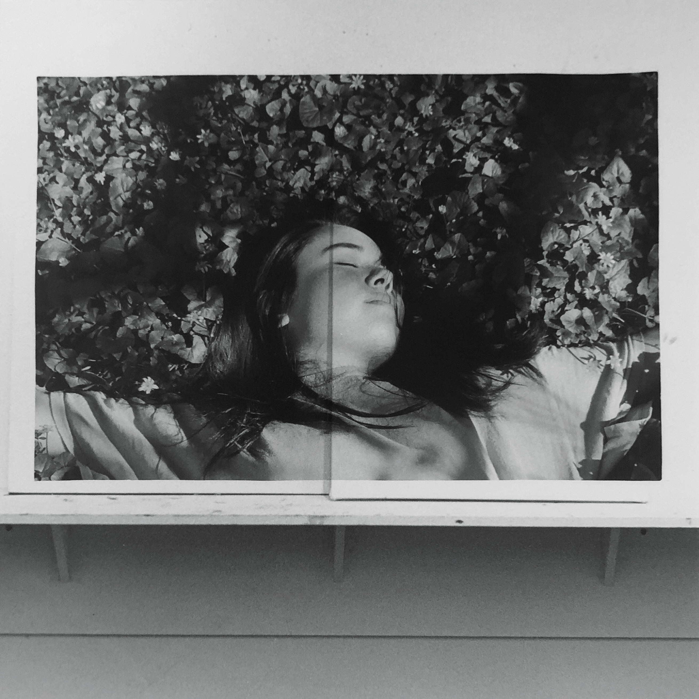
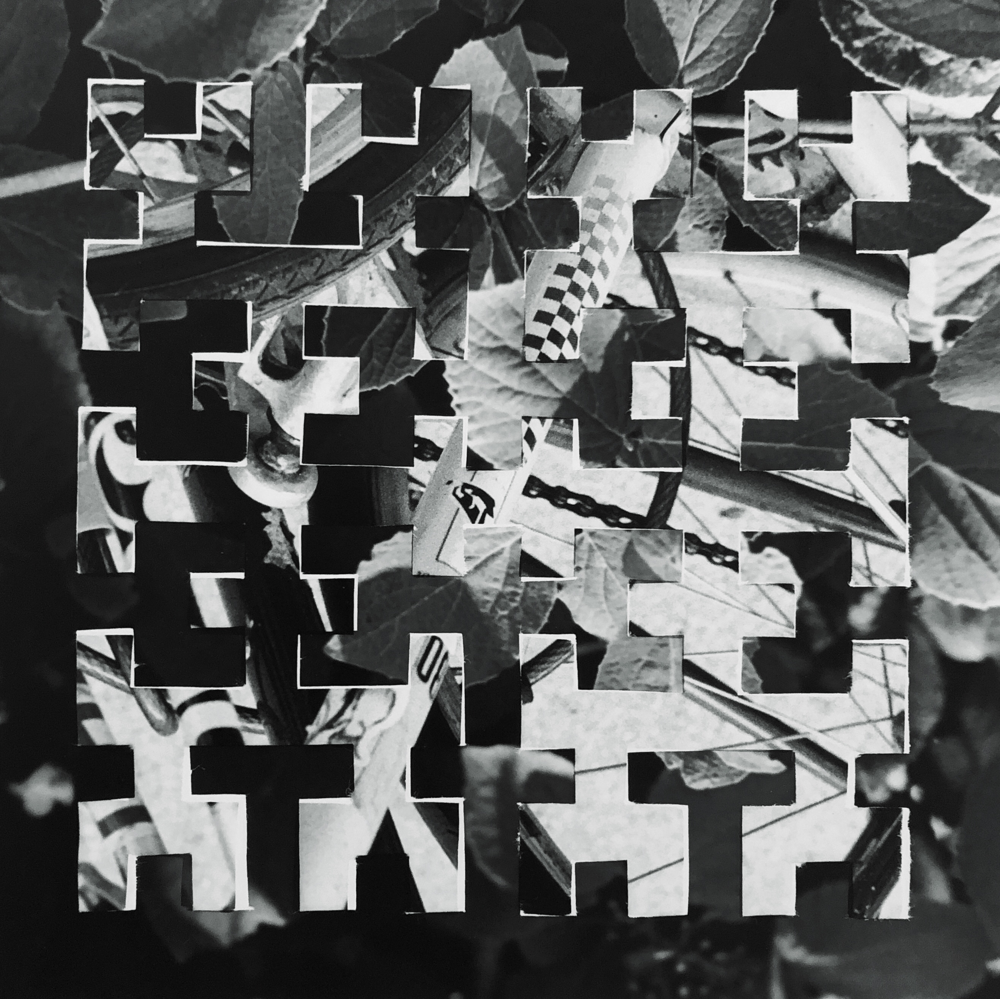
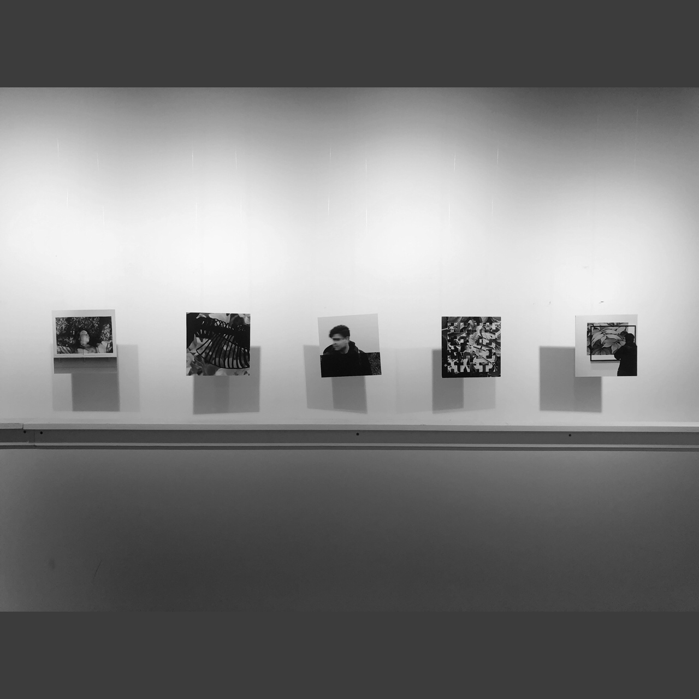
Nine people listening to Für Elise by Ludwig van Beethoven 2020
This work was created for submission to the Design Museum of Chicago's All Together Now - Sound x Design exhibition. The following is the artist's statement submitted along with the piece.
How do you represent music, without ever playing a note? Listening to music can be a profoundly personal experience—a song might hold a different meaning to everyone who hears it. When I hear Für Elise, I remember slow summer days in front of my shiny black piano in my childhood home. In this project, I wanted to explore how I could express a piece of music in a visual format instead of an auditory one, in both a objective and subjective way. Nine people listening to Für Elise by Ludwig van Beethoven draws from both the literal notes and personal interpretations of the song.
I chose Für Elise in particular because it's so widely recognized and I was interested in seeing how its structure with repeating phrases could be abstracted. I first numbered a piano keyboard from 1 to 88 and then converted the piano sheet music for Für Elise into numbers (that famous opening couple of measures is 56-55-56-55-56-51-53-52-49, all played by the right hand). I wrote a Python script to count up how many times a pair of keys were played consecutively by the same hand (e.g. how many times the left hand played A2 followed by an E3). This data was then put into Gephi, an open source data visualization software to create a graph representing the musical structure of the piece. The 88 nodes (the circles) of the graph represent the keys, white or black like they are on the keyboard. Edges connecting nodes represent when two keys are played one after another, red for when they're played by the right hand and blue for the left, with the thickness of the edge proportional to the number of times the key pair is repeated. The size of each node is proportional to the number of other nodes connected to it and thinner edges are rendered on top of thicker ones.
On some level I like that the graphs look almost random. I think it's interesting to look at even if you don't know what's happening there. But here's a piece of the song you can concretely pinpoint in all that craziness: in each graph, there's a pair of blue edges on top of the two thickest red edges, going between a white node and a black node in a loop. (In the graph in the top right corner, the loop about spans the width of the graph, the white node is a third of the way up from the bottom on the left and the black node is furthest one to the bottom right, it's like a football shape.) These edges correspond to the E-D#-E-D#-E (56-55-56-55-56) of that repeated melody, which is mostly but not always played by the right hand.
When a piece of music is played, anyone who hears it hears the same notes—every graph contains the same node and edge data. But each listener interacts with the music in their own unique way—the layout of the graph can be manipulated and still convey the same information. I called up nine friends and played them a recording of the song while rearranging the placement of the nodes of the graph, asking them to stop me and direct me in final tweaks once what they saw in the graph—the arrangement, the balance or lack thereof of the composition—matched how they felt about the music. From left to right, top to bottom, these graphs represent the following people listening to Für Elise: Nikil R., Sam F., Charlotte M., Madeleine P., Luis V., Joseph K., Natasha B., Joe K., and Victor S. If nothing else, then working on this piece was a good excuse to catch up with some friends while in quarantine.
Bringing together the nine graphs brings together nine listeners and invites the viewer to reflect on how they might visualize the music differently. Even as our interpretations of a song may differ, we can enjoy listening together. Which of these—if any—speak to you? Do you see the fluidity of the left hand arpeggios in smoothly curving lines? Do you see lightness and playfulness in overlapping diagonals? Do you see the sudden urgency of the second to last section of the song in busy clusters of color? How might your version of Für Elise look?
Architecture Dreaming (AD3) 2020
Digital drawing, Procreate on iPad Pro.
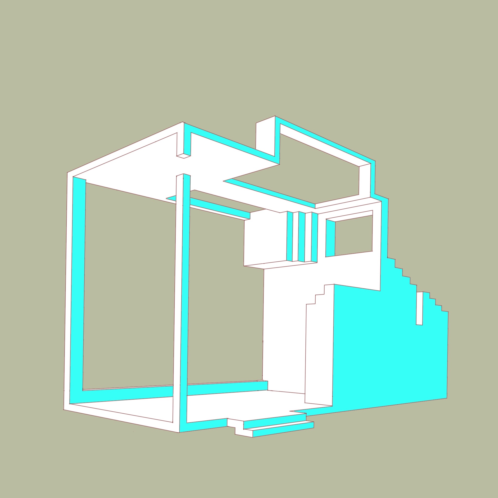
AD1 2020
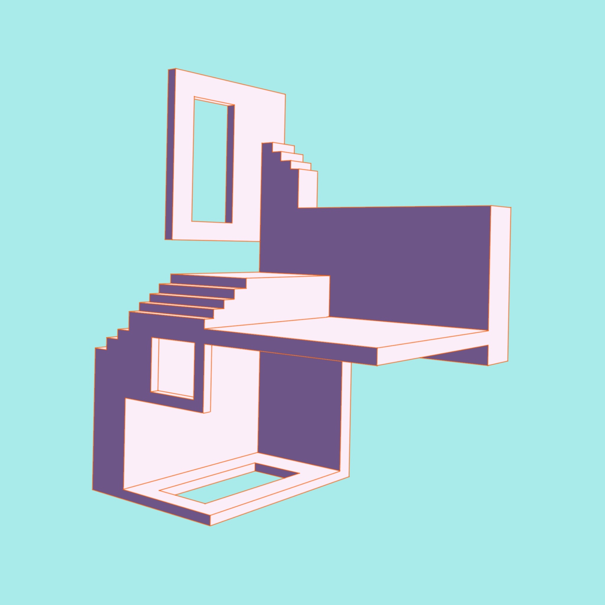
AD2 2020
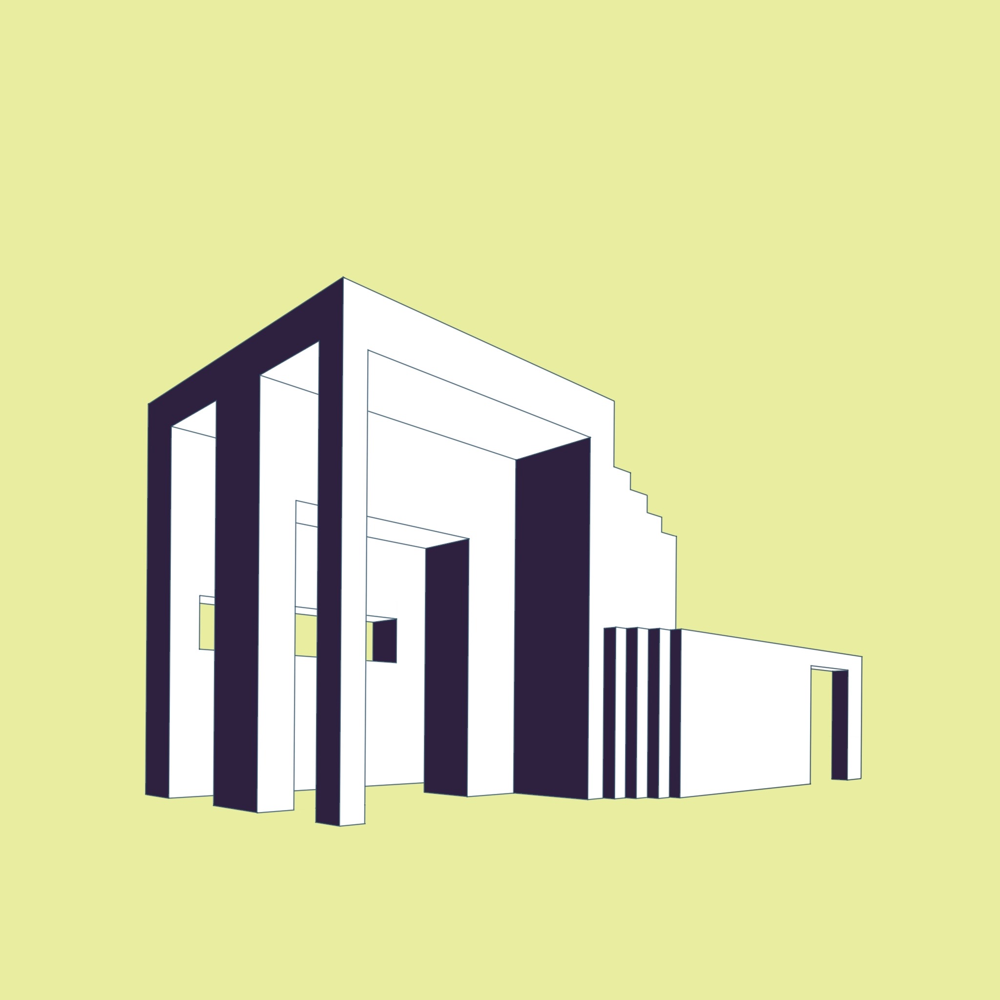
AD4 2020
This Is A Tiling Composed Of Twenty-Two Colored Six-Sided Polygons 2016
Computer screens use RGB color space to display colors as some combination of red, green, and blue; in base 10 (decimal) the amount of each color ranges from 0 to 255, and in base 16 (hexadecimal) this same range is expressed as 0 to FF. You can reference a particular color by its hexadecimal code - #000000 is pure black, #FFFFFF is pure white, #FF0000 is red, #00FF00 is green, #0000FF is blue.
ASCII is a character encoding standard used in computers that assigns characters to numbers between 0 and 127 (when in decimal). You can look up charts that give the ASCII code for every letter of the alphabet from capital A (65) to lowercase z (112), as well as for other characters like a question mark (63) or even a space (32).
Combining these two concepts means that you can express a combination of three characters as a color (or vice versa). Thus the word 'Art' can be expressed as the three decimal numbers 65, 114, 116, which in hexadecimal are 41, 72, 74, and describe a color #417274, kind of a muted, darker blue-green.
In this way, the colors of the hexagons came from the title phrase, thus encoding a description of an image into the image itself.
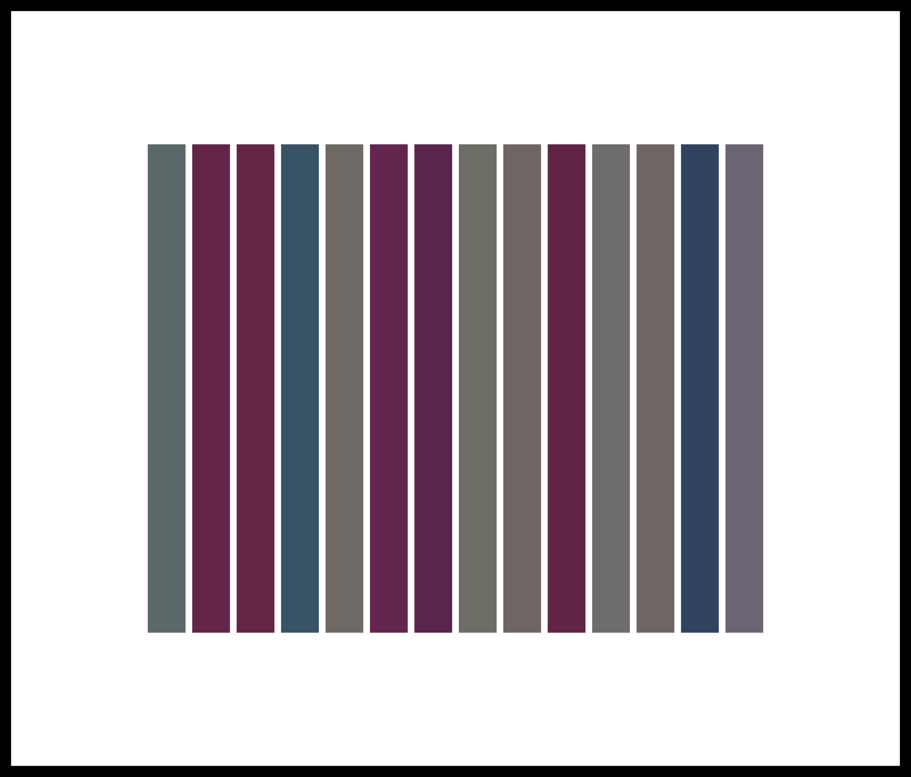
This Is A Series Of Fourteen Colored Bands 2016
This Is A Grouping Of Fifteen Colored Squares 2017
Dance shoes 2012
Contour line in pen
Continuous contour line is a style of drawing in which the artist sketches the outline of the subject while using, as much as possible, one continuous line. This is not a style that is conducive to getting perspective right or drawing straight lines. In a way, it's kind of freeing - you have one shot at it, one line, no erasing.
Do ballet, plus a little modern and jazz, for almost fourteen years and you pick up a lot of shoes.
I always liked doing art, but when I switched high schools going into tenth grade, I decided to try taking studio art as one of my core classes. I'm so glad I did, the art program was fantastic. At college, I don't have room in my schedule for art classes anymore, but I try to continue to make art. This was my very first homework assignment as a sophomore in Studio Art I.
Autumn Tessellates 2016
I just think tessellations are neat.
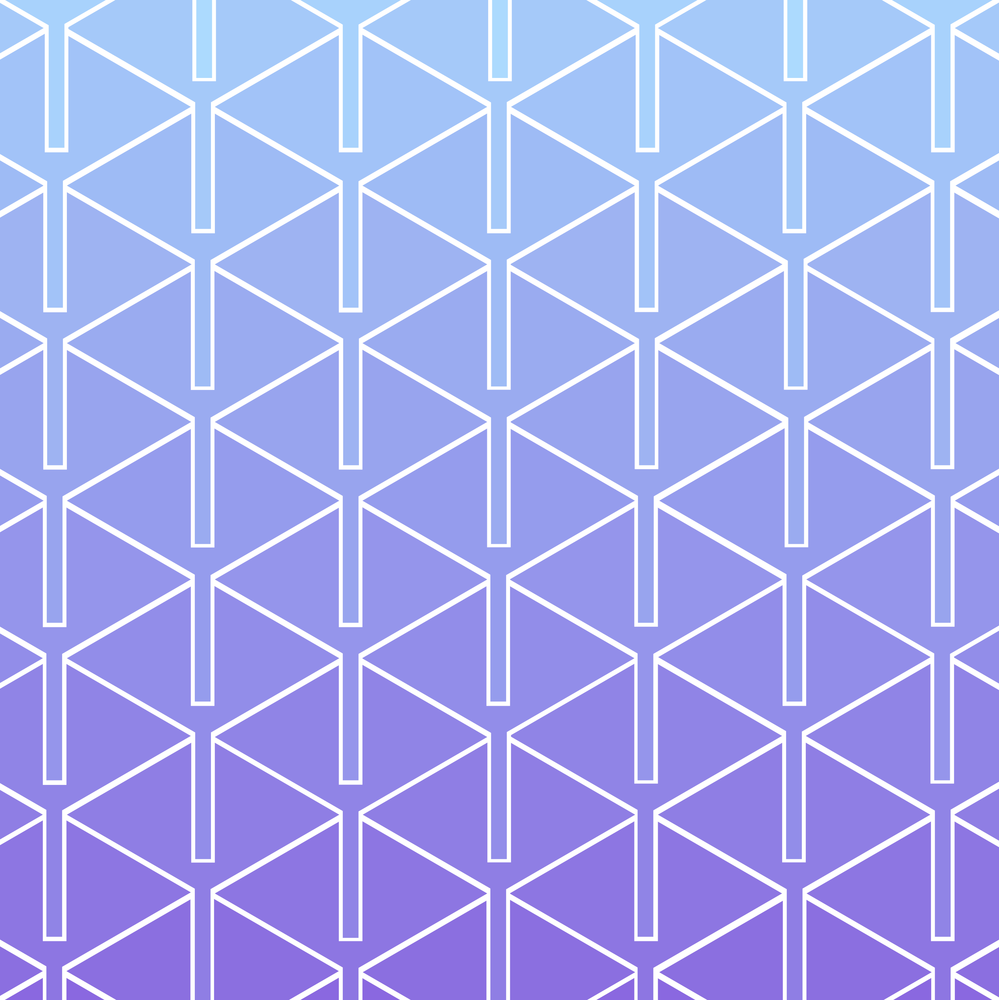
Winter Tessellates 2018
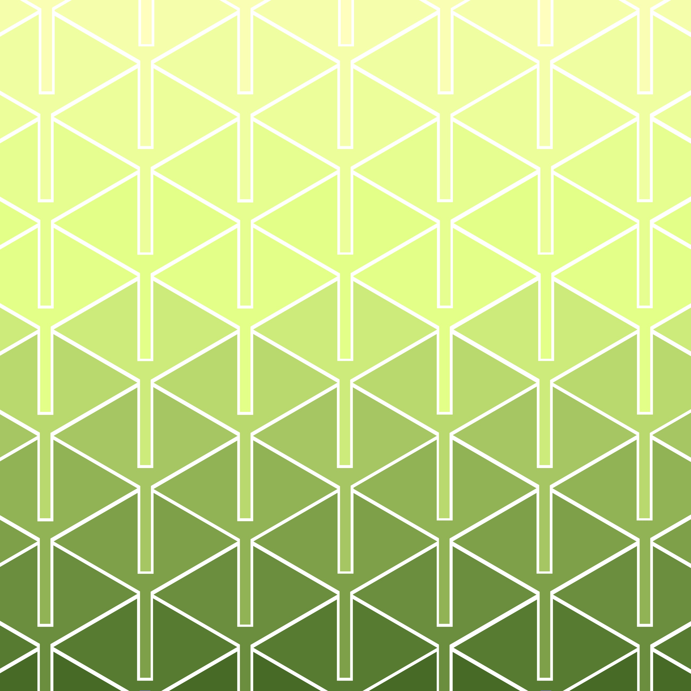
Spring Tessellates2018
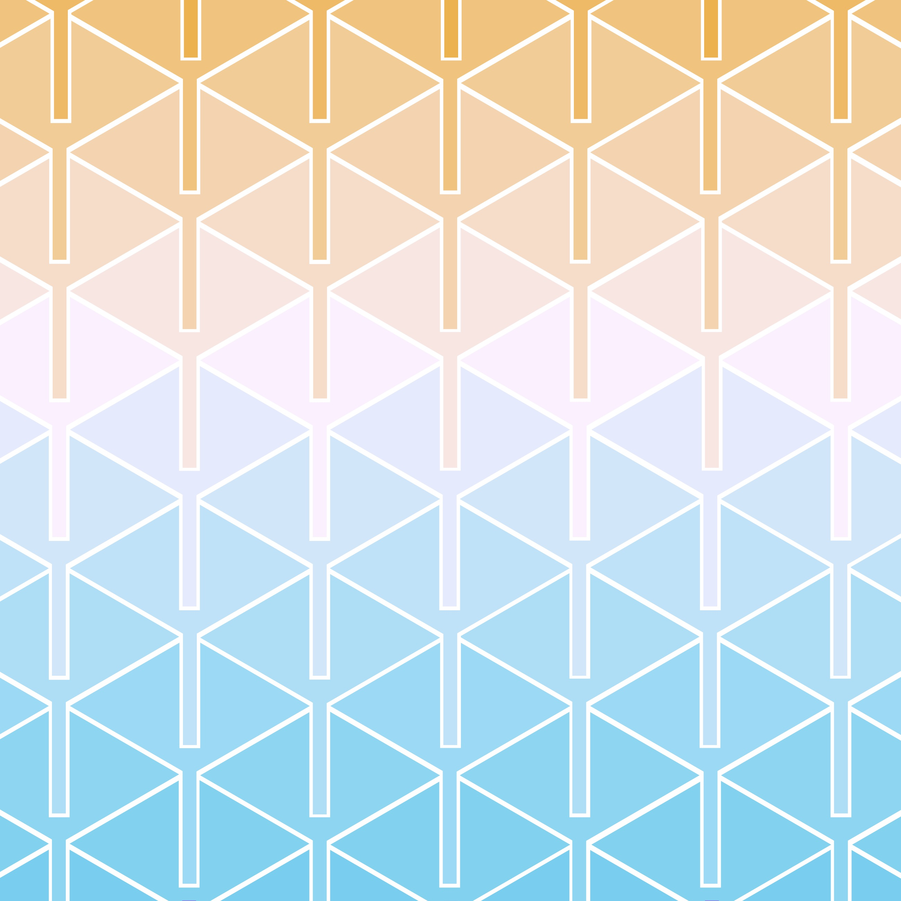
Summer Tessellates2018
Cryptomouth 2017
While making this, I was thinking about love letters, codes, public key encryption, key signing, and the phrase 'sealed with a kiss'. The background text is encrypted with a monoalphabetic substitution cipher.
Choose a keyphrase, delete all spaces and repeating letters. So for example, the key "Katherine Does Art Sometimes" becomes "katherindosm." To create the cipher aphabet, have the first letter of the keyphrase match to A, the second to B, and so on. Once you've finished with all the letters in the keyphrase, continue with the rest of the alphabet, starting with the next letter after the last letter of the key, and then wrapping around to the beginning of the alphabet. We don't want any letter to be coded to itself, so we shift the enciphered alphabet (if necessary) until there are no such repetitions.
This monoalphabetic substitution cipher, an improvement on the Caesar cipher, was in use throughout the first millennium CE, but was eventually broken by Arabic cryptanalysists using frequency analysis at least as early as the ninth century. I wrote Matlab functions for encryption and decryption using the cipher (and when I have any free time ever I'll make better python versions and put it in my github because right now the Matlab versions are annoyingly inelegant).
Scratchboard 2013
Black India ink over white clay, taken off with x-acto knife.